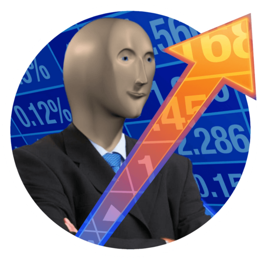

Algorithmic trading
Сия программа предназначена для
прогнозирования изменения котировок ценных бумаг
Возможности программы
- Отображение котировок и графиков
- Увеличение графиков
- Уменьшение графиков
- Двиганье графиков в 2D измерении
- Предсказание цены в будущем (ожидаемая цена цена может отличаться от реальной)
- Интерполяция
- Аппроксимация
- Поддерживается одновременная отрисовка аж до пяти графиков аппроксимации и интерполяции на независимых
виджетах
- Уникальные непредсказуемые цвета для графиков
Проект выполнен с использованием следующих технологий:
- C++17
- Qt 6.3.0
- QCustomplot
*-Не является инвестиционной рекомендацией
DEVELOPED BY: Закупаем, Докупаем, Фиксируем Прибыль